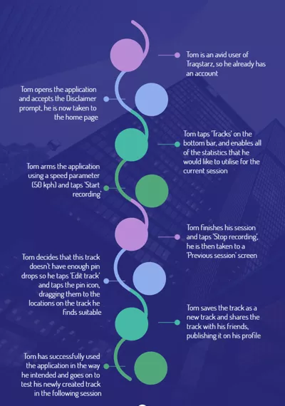
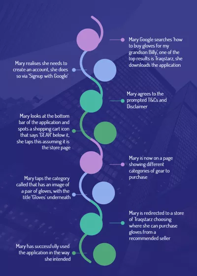
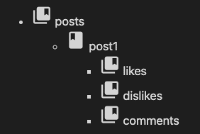
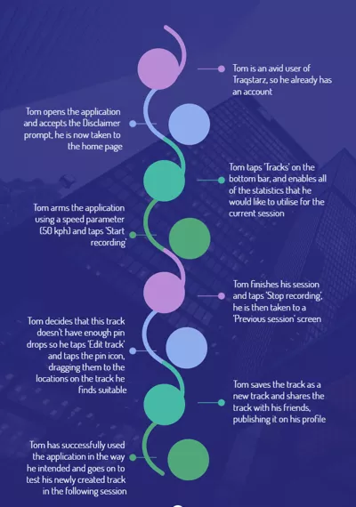
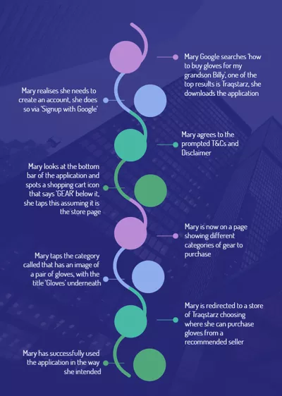
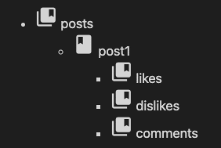

Project
Overview
Topic
Our project will be an Android-based application aimed at
people who enjoy motorbikes and going to tracks. Our
application will use GPS tracking and telemetry data
gathering to show statistics of a user's session while
they are at a racetrack. We plan for users to access
features such as map view, allowing them to place markers on
the map overlay and create their own tracks using our
application. Personal statistics such as top speeds on
tracks, track completions and lap times will also be tracked
and displayed to the user when finishing a session, saving
to their personal profile afterwards.
We will be implementing social aspects via customisable user profiles, forum boards and a follow feature. The user will be rewarded trophies, badges and currency for reaching specific criteria. We also want to promote inclusivity and provide users with links to riding guides, gear recommendations as well as news and articles relating to motorbikes and the racing world. We will be implementing safety features to prevent misuse, promote being safe while driving and offer a way to alert medical assistance in emergencies. Mostly we are hoping for users to utilise our application alongside their favourite activities, enabling the gamification of these activities by comparing statistics with friends, family and other users on the application.
This application development could potentially present the opportunity to be recognised in the higher racing communities, such as MotoGP teams and personalities, with more involvement with motorsports events and companies. This could include sponsorships, competitions, discount codes, meet and greet events and the opportunity to participate in tuition lessons hosted by motorsport champions.
We will be implementing social aspects via customisable user profiles, forum boards and a follow feature. The user will be rewarded trophies, badges and currency for reaching specific criteria. We also want to promote inclusivity and provide users with links to riding guides, gear recommendations as well as news and articles relating to motorbikes and the racing world. We will be implementing safety features to prevent misuse, promote being safe while driving and offer a way to alert medical assistance in emergencies. Mostly we are hoping for users to utilise our application alongside their favourite activities, enabling the gamification of these activities by comparing statistics with friends, family and other users on the application.
This application development could potentially present the opportunity to be recognised in the higher racing communities, such as MotoGP teams and personalities, with more involvement with motorsports events and companies. This could include sponsorships, competitions, discount codes, meet and greet events and the opportunity to participate in tuition lessons hosted by motorsport champions.
Motivation
Our motivation for this project comes from a passion for
racing and competitiveness and a broad interest in the
racing, mechanical, advertising, social and leisure aspects
this application will provide. Our application is not aiming
to solve a problem; instead, we aim to provide motorbike
enthusiasts with a way to enhance their experience in such a
niche activity. Our application fits in well with current IT
trends as we aim to utilise Cloud Computing by using Google
Firebase to host and develop our mobile application. Our
application can be considered smart technology and a
potential IoT device, considering that it could be used in
conjunction with OBDII readers, computers and GoPro. Future
application potentials can utilise AI for our track
verification, estimated track statistics and allowing for
the opt-in automation of sharing statistics to another
profile that a user interacts with regularly. The benefits
of developing this application would show potential
employees our efficient teamwork, willingness to research
and report on topics more in-depth than what is required and
our eagerness to pick up new things and attempt to master
them to the best of our abilities. It will also demonstrate
our proficiency in mobile coding, databases and cloud
computing concepts and the ability to adapt to high
workloads in short timeframes.
Landscape
The closest similar way to achieve this would be using a
buddy with a standard stopwatch timing you as you go around
the track, with him also writing down your lap times and
working out the average time himself based on known track
length. Applications similar to ours are RaceChrono, which
is a location logging and data analysis app designed for
motorsports, available in a very restricted free version or
a slightly expensive pro version priced at $28.99 on the
Google play store. Another similar app also found on
Google's play store called LapTrophy offers similar
functionality to RaceChrono at the price of $6.49 per month.
Our application Traqstarz will offer a more modern, cleaner GUI with a more user-friendly layout than the existing applications. We will incorporate better social aspects by introducing user profiles, forum boards and the ability to follow other users. Our application also includes safety features such as app locking over certain speeds, emergency assistance if accidents occur and offer engagement features to keep users wanting to come back and use our application. We will not be implementing the ability to extract telemetry data from GoPro videos at this time, as well as not allowing the reading of vehicle data using OBDII scanners, as implementing this is not viable within the constraints of our project. These are opportunities for us to expand, but not features that we will be focusing on.
Our application Traqstarz will offer a more modern, cleaner GUI with a more user-friendly layout than the existing applications. We will incorporate better social aspects by introducing user profiles, forum boards and the ability to follow other users. Our application also includes safety features such as app locking over certain speeds, emergency assistance if accidents occur and offer engagement features to keep users wanting to come back and use our application. We will not be implementing the ability to extract telemetry data from GoPro videos at this time, as well as not allowing the reading of vehicle data using OBDII scanners, as implementing this is not viable within the constraints of our project. These are opportunities for us to expand, but not features that we will be focusing on.
Detailed Description
Aims
Our application aims to provide people with an accurate way
to track data and statistics about sessions at a race track
and enable a competitive and social aspect to niche
groups' favourite activity all within their smartphone.
We want to enhance a niche group of people's experience
when doing one of their favourite hobbies. We hope that it
will help people make friends and engage in friendly
competition.
We will be designing wireframes for our application as it helps us work out the look and flow of how the application should be. Creating pages and goals for the user on each page will help section out our application and know which pages we should attempt to develop first or which are most viable to develop.
We also need to design the application's GUI and icons and the avatars that we plan to feature on user profiles. We want to do this as most of us are creative, and seeing how the application could look in the future is exciting and helps to inspire progress.
We need to develop the application, which we have chosen to do using the open-source Python library named Kivy. Kivy will enable us to integrate an android framework to develop the application for Android devices. We have chosen Kivy after looking into Google Firebase's built-in developer programming languages.
We realised that it would be too unrealistic for us to begin learning anything there and produce something workable in such a short time frame, so the viable option is to stick to Python as it is what we are learning in Intro to Programming.
We will require access to the sensors of a mobile phone, as this will be the critical component for our application to work. We need to figure out how to pull data from these sensors in either real time, or saved to a log and accessed at a later time.
As we will be allowing users to view and edit tracks via real world maps, we need to find a way to do this. We want to add in this feature to create a way for users to add in tracks that they personally use that not a lot of people know about, thus allowing for the community vibe to spread.
We intend to have a start recording and stop recording button so the user will be able to track all data within the recorded session. We need it to only be within this session for real time, reliable data so we will need to figure out how to build a stopwatch in Kivy that stops and starts data pulling.
One of our main concerns was safety, after some discussions about how to achieve this, we decided that an emergency contact message that sends out when the user is in danger would be a good way to achieve this. We would have strict rules on what ‘danger’ actually means, but we feel like this would be helpful for our users and their families' sake and also provide another legal barrier for us to not be liable.
Allowing users to create and edit their personal profiles is essential for our application not only to develop a community, as that is our theme, but to allow users to feel personally connected to our application. Viewing others profiles also adds to the social and competitiveness aspects that we are developing our application towards.
Hosting a discussion board will be an excellent way for our users to interact and gain knowledge from each other, as people enjoy sharing their knowledge. Users can ask questions when in need of assistance, or even post items for sale. This will greatly increase involvement with the application amongst users.
Disclaimers will have to be constructed and implemented to both offload responsibility of application use to users. Legal documentation and terms and conditions will also be included, outlining data collection, developer and user rights, intellectual property laws, and overall limit liability of application owners/developers.
Testing the application will be a requirement to ensure a standard of quality for users to be able to get the most enjoyment that they can from using the application. Bugs will be found and fixed, and features will be introduced or removed as a result of extensive testing.
Collaboration in developing the application itself will require developers to create/review and edit code with one another. Committing code to Github on a regular basis is a goal from our team to ensure efficient coding practices.
Before posting the application onto the Google Play store, the application will need to be hosted using a hosting service. Google Firebase is the key choice as it is free to a limit that will not be reached with our small application.
We will be publishing our application on the Google Play store, so we need to register and pay the fee for a Google Play Developer Account. This allows us to target specific audiences first before expanding to other platforms if we ever decided to.
To market our application we would be creating a website that shows off the features and explains why we decided to create the application. We will also make posters that have a QR scannable on them that will take the user to our application website too. Users will also be able to share the application to friends.
We will be designing wireframes for our application as it helps us work out the look and flow of how the application should be. Creating pages and goals for the user on each page will help section out our application and know which pages we should attempt to develop first or which are most viable to develop.
We also need to design the application's GUI and icons and the avatars that we plan to feature on user profiles. We want to do this as most of us are creative, and seeing how the application could look in the future is exciting and helps to inspire progress.
We need to develop the application, which we have chosen to do using the open-source Python library named Kivy. Kivy will enable us to integrate an android framework to develop the application for Android devices. We have chosen Kivy after looking into Google Firebase's built-in developer programming languages.
We realised that it would be too unrealistic for us to begin learning anything there and produce something workable in such a short time frame, so the viable option is to stick to Python as it is what we are learning in Intro to Programming.
We will require access to the sensors of a mobile phone, as this will be the critical component for our application to work. We need to figure out how to pull data from these sensors in either real time, or saved to a log and accessed at a later time.
As we will be allowing users to view and edit tracks via real world maps, we need to find a way to do this. We want to add in this feature to create a way for users to add in tracks that they personally use that not a lot of people know about, thus allowing for the community vibe to spread.
We intend to have a start recording and stop recording button so the user will be able to track all data within the recorded session. We need it to only be within this session for real time, reliable data so we will need to figure out how to build a stopwatch in Kivy that stops and starts data pulling.
One of our main concerns was safety, after some discussions about how to achieve this, we decided that an emergency contact message that sends out when the user is in danger would be a good way to achieve this. We would have strict rules on what ‘danger’ actually means, but we feel like this would be helpful for our users and their families' sake and also provide another legal barrier for us to not be liable.
Allowing users to create and edit their personal profiles is essential for our application not only to develop a community, as that is our theme, but to allow users to feel personally connected to our application. Viewing others profiles also adds to the social and competitiveness aspects that we are developing our application towards.
Hosting a discussion board will be an excellent way for our users to interact and gain knowledge from each other, as people enjoy sharing their knowledge. Users can ask questions when in need of assistance, or even post items for sale. This will greatly increase involvement with the application amongst users.
Disclaimers will have to be constructed and implemented to both offload responsibility of application use to users. Legal documentation and terms and conditions will also be included, outlining data collection, developer and user rights, intellectual property laws, and overall limit liability of application owners/developers.
Testing the application will be a requirement to ensure a standard of quality for users to be able to get the most enjoyment that they can from using the application. Bugs will be found and fixed, and features will be introduced or removed as a result of extensive testing.
Collaboration in developing the application itself will require developers to create/review and edit code with one another. Committing code to Github on a regular basis is a goal from our team to ensure efficient coding practices.
Before posting the application onto the Google Play store, the application will need to be hosted using a hosting service. Google Firebase is the key choice as it is free to a limit that will not be reached with our small application.
We will be publishing our application on the Google Play store, so we need to register and pay the fee for a Google Play Developer Account. This allows us to target specific audiences first before expanding to other platforms if we ever decided to.
To market our application we would be creating a website that shows off the features and explains why we decided to create the application. We will also make posters that have a QR scannable on them that will take the user to our application website too. Users will also be able to share the application to friends.
Plans and Progress
Privacy and data collection, laws and regulations,
disclaimers and T&Cs, subscription model, platform
distribution and hosting
We are planning to make a mobile phone application. We are focusing on an Android-only, Australian only application as that seems feasible for us compared to expanding onto multiple platforms and appealing to different laws and regulations; a prominent example is the GDPR. As the GDPR applies, even if a business is not hosted in Europe, we would still need to consider all of their rules. The most significant change we would have to make to adhere to the GDPR would be making reasonable efforts to verify if our user is a child or not, and if they are, if they had a parental or guardian figure consent for them. We have researched data and privacy laws in Australia, and we learned that we do not need to require age limits for Australian users as the Australian Privacy Act 'sets no minimum age at which an individual can make decisions regarding his or her personal information' (ALRC, 2010. para. 4)
However, because we will be collecting personal information and data from users, we will be adopting a Privacy-By-Design approach to our application. PDB means we will be implementing good privacy practices into our design and all decisions as we make the application. We will be implementing a privacy policy for data collection, which will include our registered company name, what data is being collected, how it is used and where it is stored, the reasons why we are collecting the information, how a user can access their personal information or ask for a correction or have their data deleted.
We will be collecting the following data:
- Location data - to enable the use of the geolocation tracking features of the application
- Name
- Date of Birth - to allow users the option to opt in to display their age on their profile
-Email address - for users to have a login and also for opt-in marketing and promotional material
- Phone number - for user account password resets as well as enabling the emergency contact feature
This data will be stored securely within our Google Firebase database, using server-side encryption. This encryption is '256-bit Advanced Encryption Standard and each encryption key is itself encrypted with a regularly rotated set of master keys.' (Google Cloud, n.d. para. 2) We believe all of this will comply with the Australian Privacy Act 1988.
We will also have a disclaimer and terms and conditions for our application users. The disclaimer will limit our liability for external and internal misuse of our application and any accidents and injuries to users using our application. The disclaimer will state basic safety instructions such as not riding under the influence and how to use PPE correctly. The disclaimer will prompt the user to accept every time they open up the application. We will also be stating that all third party links and information available within our application are not our responsibility and that they may contain copyrighted information out of our control.
The terms and conditions for using our application will further build on our disclaimer and set the rules and community guidelines. We will not tolerate harassment, abuse and violation of users' legal rights. We will also include that users agree not to violate our company's intellectual property or any third party by agreeing to our terms and conditions and not publish or post any explicit, unlawful, obscene or defamatory material. The terms and conditions must be accepted upon signing up to our application.
Our application will be distributed via the Google Play Store. Users will be able to download a free trial version of our application or pay to subscribe to the full paid version. Payments will be managed via Google Play's billing system. Due to the price sensitivity of Android application users, this is where a freemium subscription model will be effective. Users will be able to try out our application functionality, create a profile and track unlimited sessions but with limited features. Only being able to track speed and lap times, and seeing that there are many more telemetry data options would lead to the user wanting to record and display this data.
As this will be a ‘freemium’ service, some features will be locked from the user, with a few main, usable features available. When a session is begun, the user is prompted as to which telemetry features should be recorded. The main features available would be speed, lap time, and highest acceleration value only for the session. The user would not be able to record gyroscopic data such as lean angle, highest and lowest acceleration at any point on the track, total distance ridden and g-force. These options will be ‘hard greyed out’, with no way to enable them.
Also disabled will be the option to view the speed and acceleration overlays on the map. Where there are green and red lines for acceleration and deceleration respectively, there would instead be light and dark greys, making it indistinguishable between the two but clear that there is a difference between constant and changing velocity.
We considered locking out most tracks and only allowing a few select tracks to be recorded using the application, however thought this to be detrimental to the success of the app. If a user wasn't allowed to ride at a track of their choosing, they would not be inclined to change their plans, and would not even get to test the app to see if it was worth paying for it.
The application will have an option for users to utilise auditory notifications while in use. These offer insight into the data of current laps, split times, or simply ‘motivational comments’. Each option that is available will be toggleable by the user. These will be disabled with the free version.
The application will include a page for users to browse gear and tuition recommendations, with links to appropriate sites. When the user selects the button to bring this page on screen, they will be prompted with the option to subscribe, with a list of the popular features they are currently locked in the free version of the application.
This freemium model will allow the user to get a feel for our application's benefits and ease of use. Once the user reaches the maximum number of free tracking sessions, they will be prompted to upgrade by signing up for a subscription plan.
A trial/freemium pricing strategy is an effective way to boost sales of a paid application because there is a trend toward application developers shifting from charging a one-off fee to a subscription model. We will be offering users upgrading from the trial to the full version the option to pay AUD 10.00 per month or to pay only AUD 8.00 a month (a discount of 20%) if they opt for the annual subscription paying AUD 96.00 per year.
We plan to host our application on Google Firebase utilising their free but limited plan “No-cost spark plan”, which allows up to 1GB of stored data and 50k reads/20k writes per day. As we don’t think we would come close to reaching those limits within our first couple of years after the application launch, this is the perfect option. We will still be able to do all that we plan to do, with greater ease as Google Firebase offers an all-in-one solution to application development with great coding, database and hosting features. Google Firebase also has internal maintenance features, including the ability to change and optimise features without publishing a new version, thus allowing us to beta test quite easily. One of the biggest reasons we are choosing Google Firebase is that they allow for you to test out machine learning capabilities which would help us in the future design and features we have, such as AI automated track verification. Google Firebase has many inbuilt libraries that would help us to develop and deliver the best version of the application that we have in mind.
User flow examples
Opening 1: Tom loves to see all data for his sessions and wants to create a new track for his friends to compete against him because he wasn't satisfied with the verified track's amount of pins so wants to create a new track with twice as many.
 Opening 2: Mary was looking to buy a gift for her grandson who wants to begin riding motorbikes. She downloaded the application, as it was one of the top results on her Google search of ‘how to buy gloves for my grandson Billy’.
 Application features and how we plan to implement them
The core use of this application will centre around the actual movement of the phone with the user. When the user begins their session, the app will record relevant data until the user stops the recording. The user would press a 'start recording' button to begin this session. The user will be able to configure this option so that recording begins immediately. As a default option, the user can ‘arm’ the app by pressing a button. Recording would not begin until some conditions have been met, such as certain speed, location, or voice activation.
After the app begins recording and tracking telemetry data, it would continue doing so until the user stops the bike and presses the 'stop recording' button or until a condition has been reached. Some examples of conditions that would be configurable are after a certain number of successful laps around a track or a time limit. An average amount of laps and time of the session on a recreational ride day would be ~10 laps and ~15 minutes, and these would be default values.
As users are required to use gloves when riding on a track, this can be an impairment when operating the app. Most android phones have an extra sensitivity function for when users wear gloves. However, the app will not be allowed to be used when the rider is in motion, only when the rider is stopped. Therefore it is a given that riders will usually remove gloves to operate phones. Adding to the subject of the device used in motion, the application will have a 'lockout' mode that prevents the app from interacting when it detects a speed above 6 kph. This speed is set to allow the use of the app while walking, as 6 kph is the average walking speed.
The application will have a feature allowing users to load a map, with drag and zoom functions. The map will have street names and colours for grass/buildings/roads/water, just as most popular map applications do. The user will be able to specify a single point on the map to save as a point of interest which will be distinguished by a pin-like image that indicates that specific point. Using the maps and pin drop functions, the user can specify a specific pin such as one dropped at the end of pit lane, that when passed the recording would begin.
A map import and creation feature will be included. This will allow the user to pick a track map out of a list or search and import the map and included map points. This will show the map as an overhead satellite view or map view, with set pins indicating specific points of the map, such as the start and finish of corners, straights, finish lines and other key points of that track.
To allow the users to view and edit maps of tracks around the world, we will be implementing the use of Kivy Garden’s Mapview. Garden is a centralised collection of Kivy widgets, referred to as flowers. Mapview is a flower that includes support for custom maps and placing markers. Mapview utilises OpenStreetMaps as the source for the maps. This is an open source widget that works well in Kivy app development.
The user will be able to drop extra pins where they like, enabling data to be recorded as the user passes them and allowing for more accurate data values calculated using these points. These now custom maps can be uploaded/exported for others to use. After a session, this track map will have a visual element that indicates where the user was on the track and at what time. Touching any part of this overlay will bring up the 'lap choice' menu, allowing the user to see data about that point on specific laps. The overlay will also indicate red for deceleration and green for acceleration over the track.
The application will utilise the phone's GPS or an external Bluetooth GPS to record the user's location data. The app will be able to utilise this GPS data to display where the user is and their previous locations on a map. This will allow the user's speed to be determined using distance/time maths. The top and average speeds will be calculated for each session and each lap. The import and creation of verified and custom track maps will be included in the app. These maps will have specific points that indicate turns, straights, and specific locations key to each track to identify the track itself. As a user passes these points, all data collected at that point will be logged. Once the finish line point is passed, a new lap will have started, and all data in that lap will be recorded as the corresponding lap number. This will allow the user to quickly see specific lap data without hunting through the whole session data.
Accelerating values can also be calculated by tracking distance, speed, and time. This feature will require a higher polling rate GPS module to be accurate. The highest and average acceleration and deceleration values will be recorded for each lap and session and can be seen at any point. Users will look for some vital information out of corners and on the main straight. G-force is a data value that can be pulled from a phone's gyroscopic sensors at specific points, which users will want when braking and accelerating. G-forces will show how much gravitational force is on the rider as they make sudden changes in acceleration and when cornering.
Many riders make the choice to install headsets within their helmets, and it is becoming common for some manufacturers to include this in the helmets that they produce. The user will have the opportunity to utilise this by enabling the ‘Auditory features’ option when configuring the session recording.
This feature will allow voiceovers to give the rider information about the current session, such as lap count and upcoming corners. These would all be triggered by passing certain locations (pin drops on the map). This feature will also include information such as split times, new lap personal bests, and general motivating comments such as “Great job!”, and “Keep shredding!”.
If the user has a microphone in their helmet, saying “start recording”, will do exactly that. Implementing these features would require a ‘waiting for event’ function in the code of the application, and also access to the microphone along with location and telemetry data.
As an alternative to the user starting the application and arming the recording, the option to automatically begin the recording 20 seconds after the start button is pressed. This will give the user time to press the button, store the phone, check their jacket, gloves and helmet, and leave the pits to reach the track.
We aim to make this application as user friendly as possible, so people from all backgrounds and experiences will be able to have a fun and engaging experience. There will be social interactions within the app to achieve this goal, such as allowing the user to sign up and create a profile. Upon profile creation, we would like users to choose an avatar that closely represents them and then choose a vehicle type and model they own which makes the experience for the user more personalised.
We plan to have the option for users to customise their profile with stats displaying such as their fastest times or top speeds at verified tracks. Users will also be able to favourite tracks and leave reviews, which can be shown on profile tabs. We will be implementing a follow option for users to follow their friends or well-known users of our application, with push notifications being an opt-in for when someone a user follows is active on the app. This will allow users to view the statistics available of other users to compete or congratulate. We will also be implementing an achievements area on user profiles that can display trophies earned, such as 'fastest time overall on a track' and 'most completions overall on a track.' Badges will also be used, displaying badges like 'amount of tracks created overall' and 'amount of tracks completed in a month.' Users can post live streams or recorded footage of themselves on tracks via Youtube. A reporting feature will ensure that users do not post harmful or violent imagery.
We want to include a discussion board because it will be an excellent way for our users to interact and gain knowledge from each other. We plan to implement this by using Google Firebase to create a NoSQL document database that contains collections for posts, comments, likes and dislikes. This will be our backend.
 Figure 1: data structure of the posts collection, Emily Xiong, 2021. Figure 2: Example of post document entry, Emily Xiong, 2021.
Figure 2: Example of post document entry, Emily Xiong, 2021.
For our front end, we will be utilising Angular, integrating our backend with AngularFire. Using angular there are two ways to receive new data from Firebase. These are calling for the data, using ‘.get function’ or setting up a listener to receive data change events. We will opt for the ‘.get function’ to be used every 15 minutes, as we do not want to risk reaching Firebase's ‘No spark plan’ request limit. We will announce on the forum page that it is set to a 5 minute delay, so we are upfront and users aren’t confused with delays. Users can use the forum board to post questions, post ads for bike and gear sales, congratulate mother users, recommendations for bikes/gear/tracks, and other general communicative purposes.
In the future development of the application, more specifically if we ever were to transfer to Google Firebase's paid plan, we want to implement a forum board for each verified track that will update every 5 minutes. This will allow users to easily chat to other users at the same track, for example posting a message communicating that they're in x garage riding x bike, and to come say hi.
We want to welcome everyone who has a passion for racing. To help our beginner racers, we decided to have a specific section on tips and information on how to get started for beginners and a News and Articles section. This information could be helpful for everyone. We also want to include links to gear and accessories for users to purchase, rider training courses available to attend. This will be implemented by providing a specific page for users to click on images of helmets which will redirect to external web pages of known websites with high customer ratings.
By incorporating external links to websites to purchase gear and accessories, we will be able to make sure everyone involved in our application will have the tools to be as safe as possible. As the times change, so do gear standards in terms of safety. In Australia, motorcyclists are required to wear an approved helmet that adheres to the Australian (AS1698 or AS/NZ1698) standard. Not only do these protect from incidents, but by having shatterproof visors and goggles, it creates a defence from rough weather, insects and stones. Having links to purchase gear will encourage users to ride as safely as possible, as user safety is a priority for us.
For our news and article section we would use RSS feeds of popular motorbike and motorsports and add them to our application. We would not be using all of our articles and news from just one site and we would make sure to properly link to the original article as well as only provide snippets of the articles on our news and articles page, meaning when the user wants to read more they have to click on an article and will be taken to the original source article. RSS feeds will be implemented by simple HTML hyperlinks to the feeds.
We will also be linking the website webbikeworld as it aligns with the applications needs. Not only does it provide gear and bike reviews. For example, a specific brand that will be recommended as a base for your biking gear needs, is Alpinestars. Recommending popular brands by association with the website again confirms our focus on rider safety, as having an accident on a motorbike can often result in major injuries.
The story of our Application
Blayne initially thought up our application in Assignment 1. When our group came together to choose a project to work on, we all chose another one to begin with. Towards the end of Assignment 2, during a late-night call; Michelle, Blayne and Jake spoke in depth about the lack of progress, ideas and general knowledge of the project we all had chosen - and the three then came up with a proposal of change for the remaining members: the proposal included the idea of swapping to Blayne’s application instead and spoke about new features that we had thought of and had snippets of feedback that Blayne had received for the idea as well as feedback others had received from Luka. In the next meeting, the group decided that we should swap the project to Blayne’s application and thus, ‘Traqstarz’ was created. Later on in that meeting: Blayne, Michelle and Helia were the only members still in the call as it had been well past the end of our meeting. The three thought of more features for the application and came up with the structure of how the application should look and what it should do, and spoke about what the group would need to research to make the application feasible. These features were divided among the group at the next formal meeting, requiring all members to write up detailed descriptions and look into how adding these features would be implemented.
From the input of all group members, all application features were decided upon. The most prominent features were track recording options, social profiles and forums, and map feature integration with relative aspects of the application. These features were written up by all team members, with those who were stronger in technical knowledge (Blayne, Michelle, Jake) focusing on this, while others stronger in idea development (Charlie, Burak, Helia) focused on other sections of the report.
Assignment 2 was finished with a fantastic writeup of the applications proposed features as well as research on the legal and hosting sides of the application, with appropriate reports.
Assignment 3 began with the loss of one team member, which did not phase the rest of the group too much. Expansion on existing features and addition to new features of the application were discussed with the group in our first two meetings. Beginning development was also discussed, with Kivy being a suggested appropriate language to code with. An artifact list was made, where we decided on as many as we were comfortable offering with the time and team that we had. These consisted of coding some basic screens for the application, a website to promote the application, posters for marketing, and wireframes for the application.
In the third week of Assignment 3, the loss of two more members on the same day shocked what remained of the group; Michelle, Helia and Blayne. With roughly a quarter of the application report written up and no artifacts produced, the remainder still believed that the application could be planned to the expected standards for the assignment.
It is worth noting that the three team members powered ahead, producing not only the original 4 artifacts towards the application, but another 7. These consisted of various marketing concepts, many wireframes for the application and its website, the website itself, the app-flow and design for each screen. The three of us had a lot of fun being more creative with our artifacts versus struggling to produce sufficient enough code with poor previous coding skills, so coding was kept as the last priority; however still a main one. Aiming to deliver the more realistically achievable artifacts first was a good decision so we did not get stuck on a single artifact for too long.
For the coding of the application, learning Kivy was deemed to be more difficult than the team originally thought, being quite a slow process to produce even the first functioning screen. The inclusion of Kivy Garden, a hub for various Kivy modules, was planned to be utilised for the import of a custom maps module. However, unfortunately not enough progress was made beyond very simple interface coding.
Java was considered as the main language to code the application with, however our collective knowledge of Java is not optimal for the scope we are aiming to achieve.
When discussing how our application should be presented in a media setting, the group settled on a podcast, with custom animations and voiceovers. We drew up storyboards of how the presentation would be animated, and wrote a rough script. Michelle then had the idea to create versions of us in the Sims 4 and record that instead, as we all agreed animating the vision that we had would be difficult to achieve with our very limited animation skills within the short amount of time before the project due date. So the group then recorded our podcast audio which was layered over Sims 4 gameplay video.
We are planning to make a mobile phone application. We are focusing on an Android-only, Australian only application as that seems feasible for us compared to expanding onto multiple platforms and appealing to different laws and regulations; a prominent example is the GDPR. As the GDPR applies, even if a business is not hosted in Europe, we would still need to consider all of their rules. The most significant change we would have to make to adhere to the GDPR would be making reasonable efforts to verify if our user is a child or not, and if they are, if they had a parental or guardian figure consent for them. We have researched data and privacy laws in Australia, and we learned that we do not need to require age limits for Australian users as the Australian Privacy Act 'sets no minimum age at which an individual can make decisions regarding his or her personal information' (ALRC, 2010. para. 4)
However, because we will be collecting personal information and data from users, we will be adopting a Privacy-By-Design approach to our application. PDB means we will be implementing good privacy practices into our design and all decisions as we make the application. We will be implementing a privacy policy for data collection, which will include our registered company name, what data is being collected, how it is used and where it is stored, the reasons why we are collecting the information, how a user can access their personal information or ask for a correction or have their data deleted.
We will be collecting the following data:
- Location data - to enable the use of the geolocation tracking features of the application
- Name
- Date of Birth - to allow users the option to opt in to display their age on their profile
-Email address - for users to have a login and also for opt-in marketing and promotional material
- Phone number - for user account password resets as well as enabling the emergency contact feature
This data will be stored securely within our Google Firebase database, using server-side encryption. This encryption is '256-bit Advanced Encryption Standard and each encryption key is itself encrypted with a regularly rotated set of master keys.' (Google Cloud, n.d. para. 2) We believe all of this will comply with the Australian Privacy Act 1988.
We will also have a disclaimer and terms and conditions for our application users. The disclaimer will limit our liability for external and internal misuse of our application and any accidents and injuries to users using our application. The disclaimer will state basic safety instructions such as not riding under the influence and how to use PPE correctly. The disclaimer will prompt the user to accept every time they open up the application. We will also be stating that all third party links and information available within our application are not our responsibility and that they may contain copyrighted information out of our control.
The terms and conditions for using our application will further build on our disclaimer and set the rules and community guidelines. We will not tolerate harassment, abuse and violation of users' legal rights. We will also include that users agree not to violate our company's intellectual property or any third party by agreeing to our terms and conditions and not publish or post any explicit, unlawful, obscene or defamatory material. The terms and conditions must be accepted upon signing up to our application.
Our application will be distributed via the Google Play Store. Users will be able to download a free trial version of our application or pay to subscribe to the full paid version. Payments will be managed via Google Play's billing system. Due to the price sensitivity of Android application users, this is where a freemium subscription model will be effective. Users will be able to try out our application functionality, create a profile and track unlimited sessions but with limited features. Only being able to track speed and lap times, and seeing that there are many more telemetry data options would lead to the user wanting to record and display this data.
As this will be a ‘freemium’ service, some features will be locked from the user, with a few main, usable features available. When a session is begun, the user is prompted as to which telemetry features should be recorded. The main features available would be speed, lap time, and highest acceleration value only for the session. The user would not be able to record gyroscopic data such as lean angle, highest and lowest acceleration at any point on the track, total distance ridden and g-force. These options will be ‘hard greyed out’, with no way to enable them.
Also disabled will be the option to view the speed and acceleration overlays on the map. Where there are green and red lines for acceleration and deceleration respectively, there would instead be light and dark greys, making it indistinguishable between the two but clear that there is a difference between constant and changing velocity.
We considered locking out most tracks and only allowing a few select tracks to be recorded using the application, however thought this to be detrimental to the success of the app. If a user wasn't allowed to ride at a track of their choosing, they would not be inclined to change their plans, and would not even get to test the app to see if it was worth paying for it.
The application will have an option for users to utilise auditory notifications while in use. These offer insight into the data of current laps, split times, or simply ‘motivational comments’. Each option that is available will be toggleable by the user. These will be disabled with the free version.
The application will include a page for users to browse gear and tuition recommendations, with links to appropriate sites. When the user selects the button to bring this page on screen, they will be prompted with the option to subscribe, with a list of the popular features they are currently locked in the free version of the application.
This freemium model will allow the user to get a feel for our application's benefits and ease of use. Once the user reaches the maximum number of free tracking sessions, they will be prompted to upgrade by signing up for a subscription plan.
A trial/freemium pricing strategy is an effective way to boost sales of a paid application because there is a trend toward application developers shifting from charging a one-off fee to a subscription model. We will be offering users upgrading from the trial to the full version the option to pay AUD 10.00 per month or to pay only AUD 8.00 a month (a discount of 20%) if they opt for the annual subscription paying AUD 96.00 per year.
We plan to host our application on Google Firebase utilising their free but limited plan “No-cost spark plan”, which allows up to 1GB of stored data and 50k reads/20k writes per day. As we don’t think we would come close to reaching those limits within our first couple of years after the application launch, this is the perfect option. We will still be able to do all that we plan to do, with greater ease as Google Firebase offers an all-in-one solution to application development with great coding, database and hosting features. Google Firebase also has internal maintenance features, including the ability to change and optimise features without publishing a new version, thus allowing us to beta test quite easily. One of the biggest reasons we are choosing Google Firebase is that they allow for you to test out machine learning capabilities which would help us in the future design and features we have, such as AI automated track verification. Google Firebase has many inbuilt libraries that would help us to develop and deliver the best version of the application that we have in mind.
User flow examples
Opening 1: Tom loves to see all data for his sessions and wants to create a new track for his friends to compete against him because he wasn't satisfied with the verified track's amount of pins so wants to create a new track with twice as many.
 Opening 2: Mary was looking to buy a gift for her grandson who wants to begin riding motorbikes. She downloaded the application, as it was one of the top results on her Google search of ‘how to buy gloves for my grandson Billy’.
 Application features and how we plan to implement them
The core use of this application will centre around the actual movement of the phone with the user. When the user begins their session, the app will record relevant data until the user stops the recording. The user would press a 'start recording' button to begin this session. The user will be able to configure this option so that recording begins immediately. As a default option, the user can ‘arm’ the app by pressing a button. Recording would not begin until some conditions have been met, such as certain speed, location, or voice activation.
After the app begins recording and tracking telemetry data, it would continue doing so until the user stops the bike and presses the 'stop recording' button or until a condition has been reached. Some examples of conditions that would be configurable are after a certain number of successful laps around a track or a time limit. An average amount of laps and time of the session on a recreational ride day would be ~10 laps and ~15 minutes, and these would be default values.
As users are required to use gloves when riding on a track, this can be an impairment when operating the app. Most android phones have an extra sensitivity function for when users wear gloves. However, the app will not be allowed to be used when the rider is in motion, only when the rider is stopped. Therefore it is a given that riders will usually remove gloves to operate phones. Adding to the subject of the device used in motion, the application will have a 'lockout' mode that prevents the app from interacting when it detects a speed above 6 kph. This speed is set to allow the use of the app while walking, as 6 kph is the average walking speed.
The application will have a feature allowing users to load a map, with drag and zoom functions. The map will have street names and colours for grass/buildings/roads/water, just as most popular map applications do. The user will be able to specify a single point on the map to save as a point of interest which will be distinguished by a pin-like image that indicates that specific point. Using the maps and pin drop functions, the user can specify a specific pin such as one dropped at the end of pit lane, that when passed the recording would begin.
A map import and creation feature will be included. This will allow the user to pick a track map out of a list or search and import the map and included map points. This will show the map as an overhead satellite view or map view, with set pins indicating specific points of the map, such as the start and finish of corners, straights, finish lines and other key points of that track.
To allow the users to view and edit maps of tracks around the world, we will be implementing the use of Kivy Garden’s Mapview. Garden is a centralised collection of Kivy widgets, referred to as flowers. Mapview is a flower that includes support for custom maps and placing markers. Mapview utilises OpenStreetMaps as the source for the maps. This is an open source widget that works well in Kivy app development.
The user will be able to drop extra pins where they like, enabling data to be recorded as the user passes them and allowing for more accurate data values calculated using these points. These now custom maps can be uploaded/exported for others to use. After a session, this track map will have a visual element that indicates where the user was on the track and at what time. Touching any part of this overlay will bring up the 'lap choice' menu, allowing the user to see data about that point on specific laps. The overlay will also indicate red for deceleration and green for acceleration over the track.
The application will utilise the phone's GPS or an external Bluetooth GPS to record the user's location data. The app will be able to utilise this GPS data to display where the user is and their previous locations on a map. This will allow the user's speed to be determined using distance/time maths. The top and average speeds will be calculated for each session and each lap. The import and creation of verified and custom track maps will be included in the app. These maps will have specific points that indicate turns, straights, and specific locations key to each track to identify the track itself. As a user passes these points, all data collected at that point will be logged. Once the finish line point is passed, a new lap will have started, and all data in that lap will be recorded as the corresponding lap number. This will allow the user to quickly see specific lap data without hunting through the whole session data.
Accelerating values can also be calculated by tracking distance, speed, and time. This feature will require a higher polling rate GPS module to be accurate. The highest and average acceleration and deceleration values will be recorded for each lap and session and can be seen at any point. Users will look for some vital information out of corners and on the main straight. G-force is a data value that can be pulled from a phone's gyroscopic sensors at specific points, which users will want when braking and accelerating. G-forces will show how much gravitational force is on the rider as they make sudden changes in acceleration and when cornering.
Many riders make the choice to install headsets within their helmets, and it is becoming common for some manufacturers to include this in the helmets that they produce. The user will have the opportunity to utilise this by enabling the ‘Auditory features’ option when configuring the session recording.
This feature will allow voiceovers to give the rider information about the current session, such as lap count and upcoming corners. These would all be triggered by passing certain locations (pin drops on the map). This feature will also include information such as split times, new lap personal bests, and general motivating comments such as “Great job!”, and “Keep shredding!”.
If the user has a microphone in their helmet, saying “start recording”, will do exactly that. Implementing these features would require a ‘waiting for event’ function in the code of the application, and also access to the microphone along with location and telemetry data.
As an alternative to the user starting the application and arming the recording, the option to automatically begin the recording 20 seconds after the start button is pressed. This will give the user time to press the button, store the phone, check their jacket, gloves and helmet, and leave the pits to reach the track.
We aim to make this application as user friendly as possible, so people from all backgrounds and experiences will be able to have a fun and engaging experience. There will be social interactions within the app to achieve this goal, such as allowing the user to sign up and create a profile. Upon profile creation, we would like users to choose an avatar that closely represents them and then choose a vehicle type and model they own which makes the experience for the user more personalised.
We plan to have the option for users to customise their profile with stats displaying such as their fastest times or top speeds at verified tracks. Users will also be able to favourite tracks and leave reviews, which can be shown on profile tabs. We will be implementing a follow option for users to follow their friends or well-known users of our application, with push notifications being an opt-in for when someone a user follows is active on the app. This will allow users to view the statistics available of other users to compete or congratulate. We will also be implementing an achievements area on user profiles that can display trophies earned, such as 'fastest time overall on a track' and 'most completions overall on a track.' Badges will also be used, displaying badges like 'amount of tracks created overall' and 'amount of tracks completed in a month.' Users can post live streams or recorded footage of themselves on tracks via Youtube. A reporting feature will ensure that users do not post harmful or violent imagery.
We want to include a discussion board because it will be an excellent way for our users to interact and gain knowledge from each other. We plan to implement this by using Google Firebase to create a NoSQL document database that contains collections for posts, comments, likes and dislikes. This will be our backend.
 Figure 1: data structure of the posts collection, Emily Xiong, 2021.
Figure 2: Example of post document entry, Emily Xiong, 2021.
For our front end, we will be utilising Angular, integrating our backend with AngularFire. Using angular there are two ways to receive new data from Firebase. These are calling for the data, using ‘.get function’ or setting up a listener to receive data change events. We will opt for the ‘.get function’ to be used every 15 minutes, as we do not want to risk reaching Firebase's ‘No spark plan’ request limit. We will announce on the forum page that it is set to a 5 minute delay, so we are upfront and users aren’t confused with delays. Users can use the forum board to post questions, post ads for bike and gear sales, congratulate mother users, recommendations for bikes/gear/tracks, and other general communicative purposes.
In the future development of the application, more specifically if we ever were to transfer to Google Firebase's paid plan, we want to implement a forum board for each verified track that will update every 5 minutes. This will allow users to easily chat to other users at the same track, for example posting a message communicating that they're in x garage riding x bike, and to come say hi.
We want to welcome everyone who has a passion for racing. To help our beginner racers, we decided to have a specific section on tips and information on how to get started for beginners and a News and Articles section. This information could be helpful for everyone. We also want to include links to gear and accessories for users to purchase, rider training courses available to attend. This will be implemented by providing a specific page for users to click on images of helmets which will redirect to external web pages of known websites with high customer ratings.
By incorporating external links to websites to purchase gear and accessories, we will be able to make sure everyone involved in our application will have the tools to be as safe as possible. As the times change, so do gear standards in terms of safety. In Australia, motorcyclists are required to wear an approved helmet that adheres to the Australian (AS1698 or AS/NZ1698) standard. Not only do these protect from incidents, but by having shatterproof visors and goggles, it creates a defence from rough weather, insects and stones. Having links to purchase gear will encourage users to ride as safely as possible, as user safety is a priority for us.
For our news and article section we would use RSS feeds of popular motorbike and motorsports and add them to our application. We would not be using all of our articles and news from just one site and we would make sure to properly link to the original article as well as only provide snippets of the articles on our news and articles page, meaning when the user wants to read more they have to click on an article and will be taken to the original source article. RSS feeds will be implemented by simple HTML hyperlinks to the feeds.
We will also be linking the website webbikeworld as it aligns with the applications needs. Not only does it provide gear and bike reviews. For example, a specific brand that will be recommended as a base for your biking gear needs, is Alpinestars. Recommending popular brands by association with the website again confirms our focus on rider safety, as having an accident on a motorbike can often result in major injuries.
The story of our Application
Blayne initially thought up our application in Assignment 1. When our group came together to choose a project to work on, we all chose another one to begin with. Towards the end of Assignment 2, during a late-night call; Michelle, Blayne and Jake spoke in depth about the lack of progress, ideas and general knowledge of the project we all had chosen - and the three then came up with a proposal of change for the remaining members: the proposal included the idea of swapping to Blayne’s application instead and spoke about new features that we had thought of and had snippets of feedback that Blayne had received for the idea as well as feedback others had received from Luka. In the next meeting, the group decided that we should swap the project to Blayne’s application and thus, ‘Traqstarz’ was created. Later on in that meeting: Blayne, Michelle and Helia were the only members still in the call as it had been well past the end of our meeting. The three thought of more features for the application and came up with the structure of how the application should look and what it should do, and spoke about what the group would need to research to make the application feasible. These features were divided among the group at the next formal meeting, requiring all members to write up detailed descriptions and look into how adding these features would be implemented.
From the input of all group members, all application features were decided upon. The most prominent features were track recording options, social profiles and forums, and map feature integration with relative aspects of the application. These features were written up by all team members, with those who were stronger in technical knowledge (Blayne, Michelle, Jake) focusing on this, while others stronger in idea development (Charlie, Burak, Helia) focused on other sections of the report.
Assignment 2 was finished with a fantastic writeup of the applications proposed features as well as research on the legal and hosting sides of the application, with appropriate reports.
Assignment 3 began with the loss of one team member, which did not phase the rest of the group too much. Expansion on existing features and addition to new features of the application were discussed with the group in our first two meetings. Beginning development was also discussed, with Kivy being a suggested appropriate language to code with. An artifact list was made, where we decided on as many as we were comfortable offering with the time and team that we had. These consisted of coding some basic screens for the application, a website to promote the application, posters for marketing, and wireframes for the application.
In the third week of Assignment 3, the loss of two more members on the same day shocked what remained of the group; Michelle, Helia and Blayne. With roughly a quarter of the application report written up and no artifacts produced, the remainder still believed that the application could be planned to the expected standards for the assignment.
It is worth noting that the three team members powered ahead, producing not only the original 4 artifacts towards the application, but another 7. These consisted of various marketing concepts, many wireframes for the application and its website, the website itself, the app-flow and design for each screen. The three of us had a lot of fun being more creative with our artifacts versus struggling to produce sufficient enough code with poor previous coding skills, so coding was kept as the last priority; however still a main one. Aiming to deliver the more realistically achievable artifacts first was a good decision so we did not get stuck on a single artifact for too long.
For the coding of the application, learning Kivy was deemed to be more difficult than the team originally thought, being quite a slow process to produce even the first functioning screen. The inclusion of Kivy Garden, a hub for various Kivy modules, was planned to be utilised for the import of a custom maps module. However, unfortunately not enough progress was made beyond very simple interface coding.
Java was considered as the main language to code the application with, however our collective knowledge of Java is not optimal for the scope we are aiming to achieve.
When discussing how our application should be presented in a media setting, the group settled on a podcast, with custom animations and voiceovers. We drew up storyboards of how the presentation would be animated, and wrote a rough script. Michelle then had the idea to create versions of us in the Sims 4 and record that instead, as we all agreed animating the vision that we had would be difficult to achieve with our very limited animation skills within the short amount of time before the project due date. So the group then recorded our podcast audio which was layered over Sims 4 gameplay video.
Roles
We will not be assigning specific roles to our members as we
all work collaboratively most of the time or in one on one
sessions, as well as help out each other with assigned
sections - meaning none of us ‘stick to our lane’. We are
all helpful when we can be and this works well within our
team. We saw that this helped with members who have busier
lifestyles, allowing their work to be completed faster and
helping them not feel so behind or stressed out due to the
number of sections they have or haven't completed. We
feel like this helped us achieve our absolute best in
Assignment 2, and plan on continuing this process in
Assignment 3, even more so now that three of our members
have decided to quit the course and we are just a three-man
group. We believe that there is no point in changing a
system that already works, and we do not need to identify
roles to feel like we contribute well to a team. We prefer
feeling like a unit, rather than a bunch of people sticking
to their assigned tasks.
Scope and Limits
We came into Assignment 3 with idealistic views, expecting
to deliver as many artifacts towards the project as
possible. However along the way we realised that with 3 of
our group members dropping out of the course, some of our
expectations were not going to be met as perfectly as we set
them out to be. One of our most difficult challenges so far
has been coding, as we only have 3 members and not all of
experience or background in coding. In the beginning of A3
we assumed that it would be easier to code most of the
application, but with the shortages of members and our
limited knowledge, it became clear that we were looking at
maybe only a couple pages of the application to be coded. We
believe if we had six people like we originally were meant
to, the coding aspect could have been a lot smoother for us
and we could have delivered a higher quality coding
artifact.
Knowing that we were going to be struggling with this artifact, we jumped heavily into producing other, more creative artifacts. This includes a fully researched marketing plan, along with a time schedule for our social media accounts to gain the most engagement to further our potential applications growth. We have designed a marketing poster along with icons and a mockup application. We also decided that wireframes are a straightforward and simple way of showing a great example of how our application could be developed for users. They show every aspect of the application from start to finish in a methodical manner, with attached descriptions for each screen/option. We created both a wireframe for both the application, and the applications theoretical website. We chose to produce the website for the applications advertisement to show yet another way that we would handle the applications production lifespan.
A comprehensive terms and conditions, disclaimer, cookie policy, and privacy policy will be delivered as an artifact showing our research and understanding of legal considerations for an application such as Traqstarz, both within Australia and world wide. This was fairly straightforward to produce, with the use of a legal document generator and the cookie policy being a version of Twitter’s, altered to reflect ‘Traqstarz’. All of this has been thoroughly cited as well!
We also decided to create a trailer for our Application Website as another marketing strategy to give a better insight about our application and our organisation.
Some things that were impossible to deliver were pulling telemetry data from phones, due to our limited set of knowledge and skills. We were also unable to deliver storage of data due to us not having enough knowledge and experience with Google Firebase, as that is where we intended to host the application. The last thing that we were unable to due to the limited time and members was testing the application, as mentioned before this would require coding the application to its entirety which we were not able to achieve.
We decided to produce as much as we can in the limited time available and evenly divide our dedication on all parts of the assignment to deliver an outcome we are satisfied with. Although we felt more like a marketing team to our application than the developers, we tried our absolute best in the areas that we knew we would achieve the most success within the set timeframe.
Knowing that we were going to be struggling with this artifact, we jumped heavily into producing other, more creative artifacts. This includes a fully researched marketing plan, along with a time schedule for our social media accounts to gain the most engagement to further our potential applications growth. We have designed a marketing poster along with icons and a mockup application. We also decided that wireframes are a straightforward and simple way of showing a great example of how our application could be developed for users. They show every aspect of the application from start to finish in a methodical manner, with attached descriptions for each screen/option. We created both a wireframe for both the application, and the applications theoretical website. We chose to produce the website for the applications advertisement to show yet another way that we would handle the applications production lifespan.
A comprehensive terms and conditions, disclaimer, cookie policy, and privacy policy will be delivered as an artifact showing our research and understanding of legal considerations for an application such as Traqstarz, both within Australia and world wide. This was fairly straightforward to produce, with the use of a legal document generator and the cookie policy being a version of Twitter’s, altered to reflect ‘Traqstarz’. All of this has been thoroughly cited as well!
We also decided to create a trailer for our Application Website as another marketing strategy to give a better insight about our application and our organisation.
Some things that were impossible to deliver were pulling telemetry data from phones, due to our limited set of knowledge and skills. We were also unable to deliver storage of data due to us not having enough knowledge and experience with Google Firebase, as that is where we intended to host the application. The last thing that we were unable to due to the limited time and members was testing the application, as mentioned before this would require coding the application to its entirety which we were not able to achieve.
We decided to produce as much as we can in the limited time available and evenly divide our dedication on all parts of the assignment to deliver an outcome we are satisfied with. Although we felt more like a marketing team to our application than the developers, we tried our absolute best in the areas that we knew we would achieve the most success within the set timeframe.
Tools and Technologies
Kivy
Kivy was suggested in the beginning by Blayne as it is mainly used for Android app development. Unfortunately whilst installing Kivy we came across a few technical issues which we could not resolve due to our limited set of skills and knowledge. After 2 hours of trying to install Kivy on PyCharm we finally decided to move on and use Visual Studio. We thought that Kivy was difficult to understand due to its limited documentation, however once googling how other people have approached application development using Kivy, it became a little easier to grasp.
Python
We chose Python because Michelle and Blayne had some knowledge about it since they were in programming, but for Helia it was a bit more difficult to get comfortable with Python since she has had no experience with it. Luckily Blayne and Michelle had enough knowledge about Python and guided Helia step by step, from how to download the program , how to access the program and lastly how to do basic coding. As Intro to Programming teaches us the basics, we felt more than capable in producing something using Python. In closing though, we realised just how hard it actually can be and we definitely underestimated the difficulty and need more experience and knowledge before we could ever realistically produce an application.
PyCharm
PyCharm was offered by Blayne as an alternative to the Python IDE as it has an updated and modern text editor, and support for plugins for easy importation of Kivy modules. This program was downloaded by each member and we began by attempting to write a program using Kivy. This proved to be difficult as attempting to set Pycharms path variables to use both Kivy and Python was not going well. We spent 3 hours on this task, with team members achieving differing success at differing points of install.
We approached the use of the PyCharm interpreter with a mindset of how simple and straightforward it would be, but ditched the idea to utilise Visual Studio Code when it became too problematic. Overall the group did not enjoy using PyCharm, and will likely not use it again in favour of the better program VSC.
Visual Studio Code
Visual Studio Code was offered as an alternative to the PyCharm idea by Michelle, as she had experience in using VSC. She discovered that it had Kivy plugin support as well as many other related quality of life plugins. Immediately we were able to successfully test an example Kivy application of a simple button with no problems. VSC also includes a Live Sharing plugin, allowing users to collaborate in real time on the same document of code. This allowed Blayne and Michelle to offer Helia some support in learning Python + Kivy, as well as offer insight into each other’s coding efforts. Overall the group enjoyed the simplicity of using VSC and will continue to utilise this program.
Google Firebase
Initially we chose to use Google Firebase to host and develop our application as we thought it would be easy to have it all in the one location, however this would require everyone to learn Java in just about 4 weeks - which is a ridiculous ask. Also, we did not really understand how to set up a server or store credentials - therefore utilising Google Firebase wasn’t going to realistically happen, so we went ahead and used Kivy in Visual Studio Code to create what we could of our application. Google Firebase is still the hypothetical host for our application, at least until the application ever became big enough that we were blowing past Google’s free limitation plan. In closing, our idea was solid but due to our experience and knowledge of developing applications, we failed to execute it.
Kivy was suggested in the beginning by Blayne as it is mainly used for Android app development. Unfortunately whilst installing Kivy we came across a few technical issues which we could not resolve due to our limited set of skills and knowledge. After 2 hours of trying to install Kivy on PyCharm we finally decided to move on and use Visual Studio. We thought that Kivy was difficult to understand due to its limited documentation, however once googling how other people have approached application development using Kivy, it became a little easier to grasp.
Python
We chose Python because Michelle and Blayne had some knowledge about it since they were in programming, but for Helia it was a bit more difficult to get comfortable with Python since she has had no experience with it. Luckily Blayne and Michelle had enough knowledge about Python and guided Helia step by step, from how to download the program , how to access the program and lastly how to do basic coding. As Intro to Programming teaches us the basics, we felt more than capable in producing something using Python. In closing though, we realised just how hard it actually can be and we definitely underestimated the difficulty and need more experience and knowledge before we could ever realistically produce an application.
PyCharm
PyCharm was offered by Blayne as an alternative to the Python IDE as it has an updated and modern text editor, and support for plugins for easy importation of Kivy modules. This program was downloaded by each member and we began by attempting to write a program using Kivy. This proved to be difficult as attempting to set Pycharms path variables to use both Kivy and Python was not going well. We spent 3 hours on this task, with team members achieving differing success at differing points of install.
We approached the use of the PyCharm interpreter with a mindset of how simple and straightforward it would be, but ditched the idea to utilise Visual Studio Code when it became too problematic. Overall the group did not enjoy using PyCharm, and will likely not use it again in favour of the better program VSC.
Visual Studio Code
Visual Studio Code was offered as an alternative to the PyCharm idea by Michelle, as she had experience in using VSC. She discovered that it had Kivy plugin support as well as many other related quality of life plugins. Immediately we were able to successfully test an example Kivy application of a simple button with no problems. VSC also includes a Live Sharing plugin, allowing users to collaborate in real time on the same document of code. This allowed Blayne and Michelle to offer Helia some support in learning Python + Kivy, as well as offer insight into each other’s coding efforts. Overall the group enjoyed the simplicity of using VSC and will continue to utilise this program.
Google Firebase
Initially we chose to use Google Firebase to host and develop our application as we thought it would be easy to have it all in the one location, however this would require everyone to learn Java in just about 4 weeks - which is a ridiculous ask. Also, we did not really understand how to set up a server or store credentials - therefore utilising Google Firebase wasn’t going to realistically happen, so we went ahead and used Kivy in Visual Studio Code to create what we could of our application. Google Firebase is still the hypothetical host for our application, at least until the application ever became big enough that we were blowing past Google’s free limitation plan. In closing, our idea was solid but due to our experience and knowledge of developing applications, we failed to execute it.
Testing
Our application will be tested during all stages of
development. In early stages, mock data will be created to
simulate sessions so the application can demonstrate its
current stage ability to perform. This will help us see
where we are going right and what we are doing wrong along
the way. Further into the development process, as builds are
being considered pre-release rather than alpha builds, the
application will be able to be utilised on a phone. This can
be taken into a real time setting to observe the performance
and viability of certain features. All testing will be
performed by our developers, and hired testers will not be
required for such a small case application. We will strive
to present an application that is completely built and bug
free to ensure the best experience for those who use our
application. We will know our application no longer needs
testing and is ready for publishing when we can successfully
showcase all of our intended features with no noticeable
bugs or application breaking errors.
Timeframe
Risks
Some risks that we noticed upfront was our use of Kivy, as
it is a python module that we don’t understand quite well,
on top of the fact none of us have a heavy background in
coding and are currently learning basic Python in Intro to
Programming. Going in depth into this risk, we do not
currently know how to do anything in Kivy – when we first
installed it, it took us 2 hours to do so while we were
collaborating. After research, we have a general idea of how
most of our features can be implemented, but that doesn’t
mean that we will be experienced enough to understand how to
do that. As all of our features heavily rely on Kivy/Python,
the biggest risk of our application is us not understanding
Kivy/Python well enough.
Another similar risk is the team's comfort and knowledge around specifically Android based operating systems. Pulling data from phone sensors requires specific knowledge on how to navigate android directories and find sensor data. Sensors may also be locked behind root access to the phone, requiring us to be comfortable in gaining access to root partitions within the phone and how to access the sensors for their raw data. Rooting in Android can be a simple process to some, however to those who have not read forums and guides on this may struggle using required software or command line interfaces to do this.
As we do not have precise knowledge on all laws governing data collection specific to every country, there is a chance that some of these laws may be accidentally breached when a user uses our application. We also have no experience with data pulling or storing so have no general idea of how much storage we would be requiring to utilise this data.
Another similar risk is the team's comfort and knowledge around specifically Android based operating systems. Pulling data from phone sensors requires specific knowledge on how to navigate android directories and find sensor data. Sensors may also be locked behind root access to the phone, requiring us to be comfortable in gaining access to root partitions within the phone and how to access the sensors for their raw data. Rooting in Android can be a simple process to some, however to those who have not read forums and guides on this may struggle using required software or command line interfaces to do this.
As we do not have precise knowledge on all laws governing data collection specific to every country, there is a chance that some of these laws may be accidentally breached when a user uses our application. We also have no experience with data pulling or storing so have no general idea of how much storage we would be requiring to utilise this data.
Group Processes and Communications
Our group communicates via our group chat that we made on
Microsoft Teams. We talk quite often in the group chat as we
all feel like friends in such a short amount of time and
enjoy being engaged in each other's lives. We schedule
two meetings a week on Microsoft Teams that are held on
Wednesday and Sunday; with every second Sunday’s meeting
being pushed to Monday to allocate for work schedules
changing. Outside of our scheduled meetings, if we feel like
we need an extra catch up to be more efficient in our
progress we usually book another meeting for Fridays during
the daytime. As we get closer to the submission date we have
a plan ready to enable efficiency as well as help each other
stick to deadlines. We plan to have more meetings and
require daily check-ins, even if it’s just to say “I was too
busy to do anything today, tomorrow I will continue my
section.” By implementing this plan we hope to overcome the
problem we had last assignment, which was the failure to
adhere to deadlines and people feeling stressed out with
their busy lives on top of modules and doing the assignment.
During Assignment 2 we did experience group members not
responding to communication and in the next group meeting,
we brought up the issue with them and asked for an
improvement, afterwards we were shown that our feedback was
taken into account and the effort to solve the problem was
properly applied. During Assignment 3 we experienced a
member leaving and another one not responding to any
messages. So we reached out to Anthony and Luka, to attempt
to see if they could push the member to speak. This had an
odd effect of making another member leave, along with the
non communication member finally speaking up that he too,
was leaving. So we were left as a three man group within
under a week. Despite that though, us three remaining feel
that we did the best we could in terms of attempting to get
a clear picture of what was going on and how we were
progressing forward as a team for A3 and A5. Overall, we
feel that the remaining three of us are very transparent
with each other in both our communications and efforts shown
via collaboration with each other and contributions to the
team.